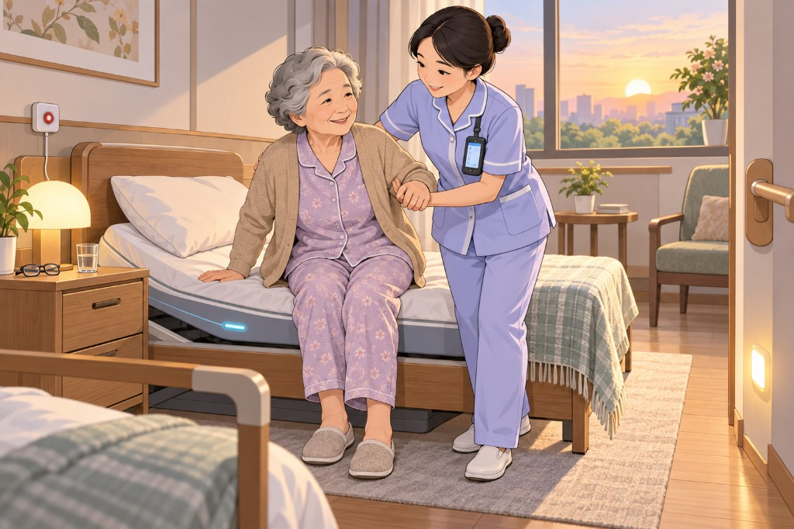
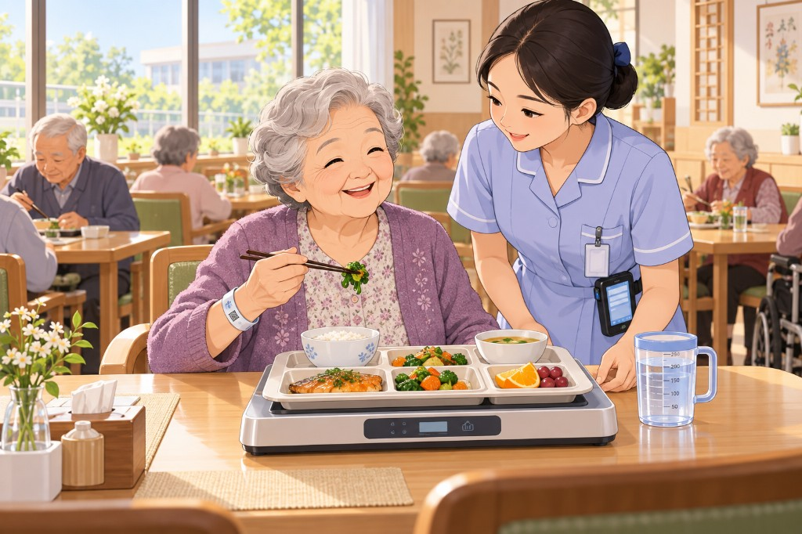
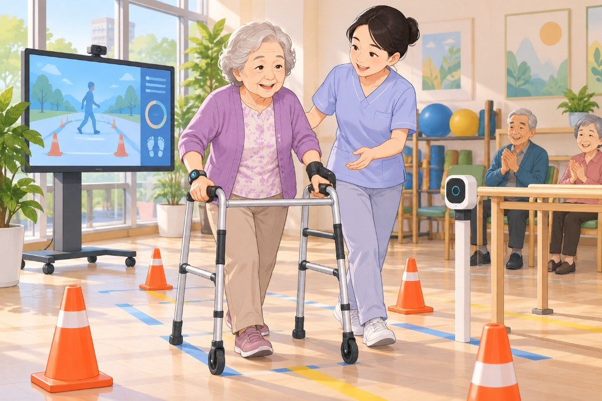
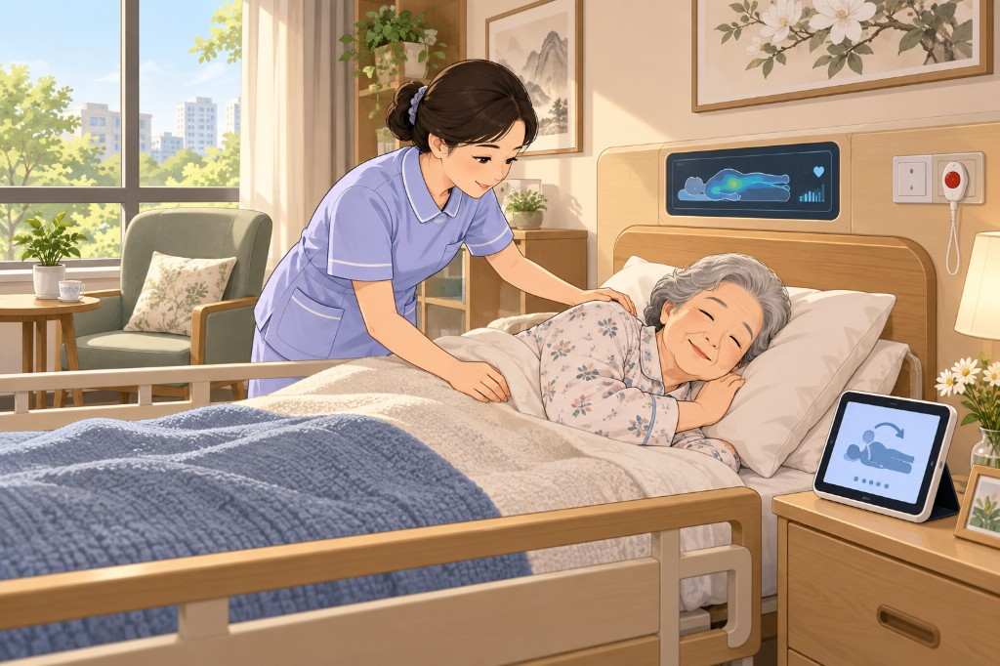
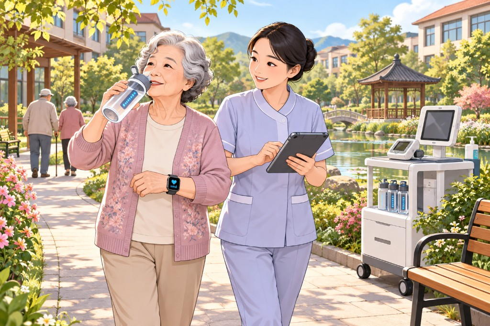
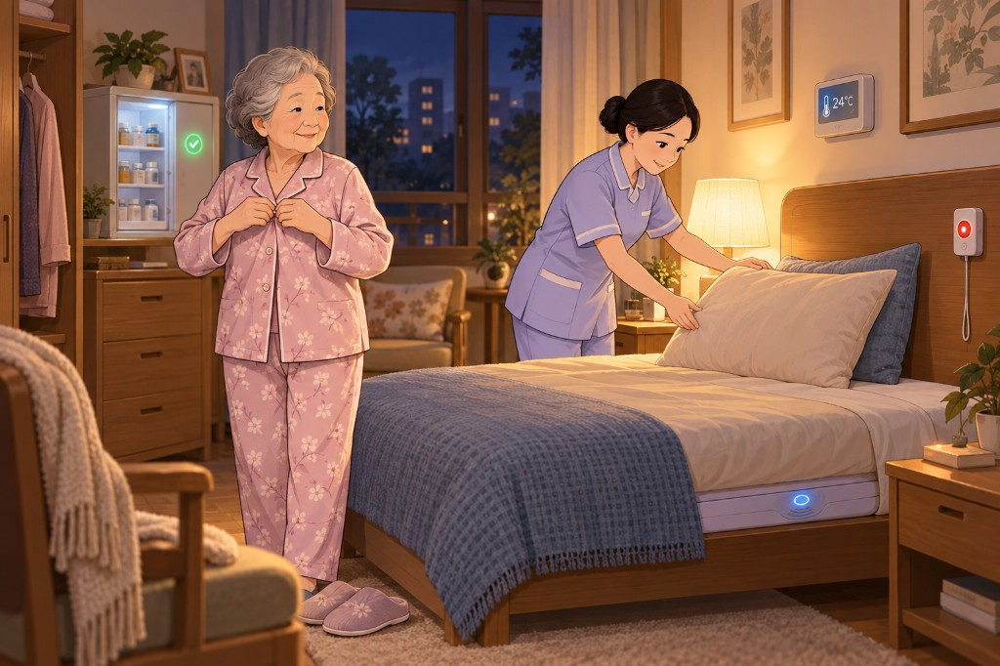
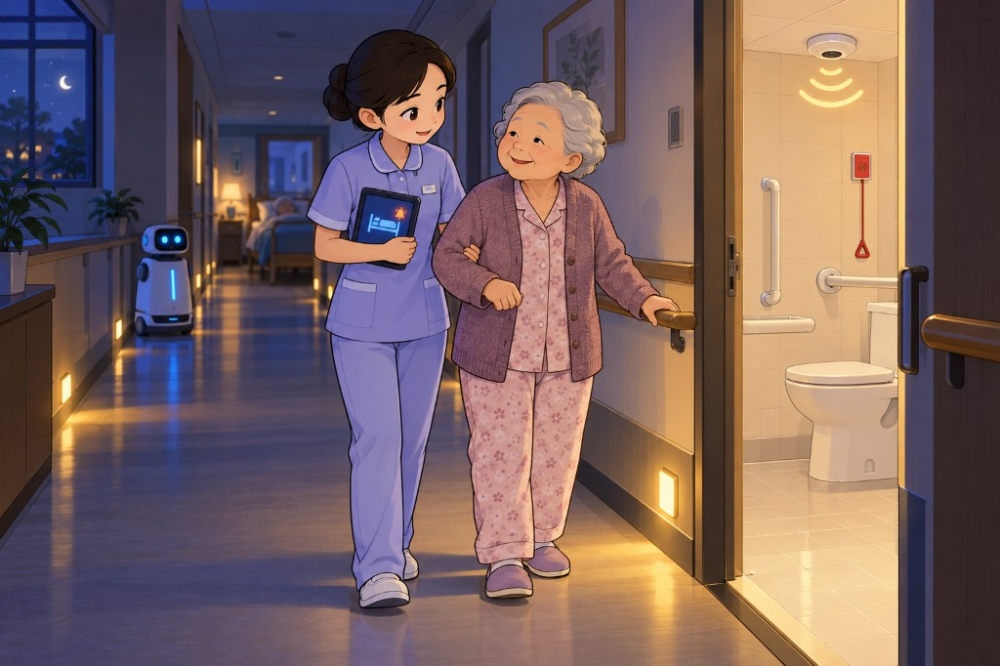
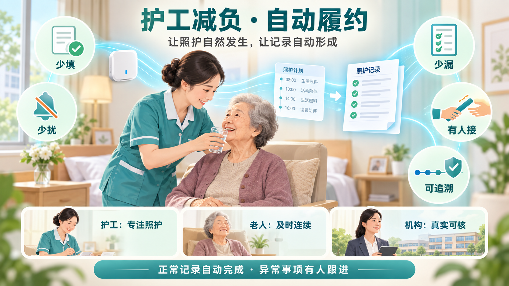
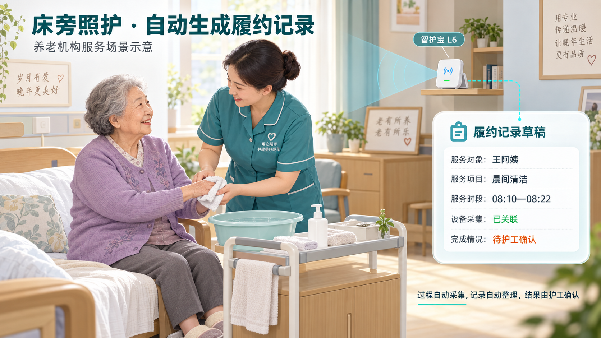

目录
一、护工一天的动线
二、照护履约记录 · 价值
二、自动履约机制
三、闭环模式
四、场景硬件
五、健康研判
六、试点验收
上篇 · 护工的一天
先看清护工「去哪、做什么」，再理解系统如何在这条动线上自动形成履约记录。
一、护工一天的动线
动线按时段展开：每段明确「去哪、做什么」。这是机构照护的现实工作流——
护工沿护理站、房间、卫浴、餐厅、康复区、户外往返，完成交接、晨间护理、餐食、活动、翻身、夜巡等任务。
下表先给出全天节奏；随后各场景卡片展开「护工动线 → 硬件 → 智能体 → 价值」。
系统留痕 列提示「本可自动记什么」，具体如何少填、少扰，见后文「照护履约记录」。
动线不应「一刀切」。系统应按老人护理等级、失智/跌倒/压疮/吞咽风险和医嘱，自动生成个人任务卡与巡房优先级。
现行《养老机构服务安全基本规范》强调安全风险评估、昼夜巡查、交接班，以及跌倒、噎食、压疮、走失等风险防范。
（参考：
国家标准 GB 38600-2019 ）
场景示意
以下按一日主场景配图，并沿用上一版分层：
智能硬件（安全兜底）→ 智能体 → 护工服务 → 用户价值 ，
同时标注数字化能力（健康慢病 / 增效体验）。







动线看清之后：日常照护已经付出，记录却常靠事后补录。
接下来聚焦照护履约记录 ——如何在这条动线上做到少填、少扰、少漏、有人接、可追溯。
进入履约记录 →
下篇 · 照护履约记录
在上述动线之上，聚焦「护工减负 · 自动履约」：正常事项自动记，异常事项有人接。
二、照护履约记录 · 核心价值
护工减负自动履约记录系统的核心价值是：
让护工把时间用于照护老人，让系统在后台完成记录整理；
让已经付出的工作能够被准确看见，让尚未完成的照护能够继续有人负责。

照护计划
→
现场照护自然发生
→
照护记录自动形成
·
正常自动完成，异常有人跟进
五个价值抓手
少填
减少重复记录
草稿自动生成，确认后可复用交班与业务系统。
少扰
减少工作打断
正常照护不频繁开手机；异常才集中待确认。
少漏
减少遗漏
对照计划与实际记录，识别未完成与即将超时。
有人接
求助能被承接
待办明确接手人与时限，未解决进入交班。
可追溯
保护真实劳动
区分计划责任人与实际执行人，可申请更正。
正常记录自动完成 · 异常事项有人跟进
对护工的价值
减少重复记录
系统结合排班、照护任务和智护宝采集数据，自动生成履约记录草稿。
基础信息自动填写，确认后的记录可复用于交班和业务系统，减少反复补记和多处录入。
减少工作打断
正常照护过程中，护工不需要频繁打开手机、选择老人或填写时间。
系统只在无法判断照护结果或发生异常时，集中展示少量待确认内容。
减少遗漏
系统持续对照照护计划和实际记录，帮助护工识别尚未完成、需要协作或即将超时的任务，
降低忙碌班次中的遗漏风险。
求助能够得到承接
老人拒绝、需要双人协作或任务无法按时完成时，系统形成待办，明确接手人、处理时限和升级路径。
未解决事项会进入交班，不会随着原护工下班而消失。
保护护工的真实劳动
系统分别记录计划责任人和实际执行人，保留代班、协作、中断和老人拒绝等情况。
设备故障或数据缺失不会直接认定为护工未履约，错误归属也可以申请更正。
对老人的价值
护工减少系统操作，把注意力放在老人身上；
老人的需求、拒绝和感受能够进入服务记录；
未完成事项有明确的后续安排；
临时变化和跨班任务不容易遗漏；
照护连续性和响应速度得到改善。
对护理组长的价值
护理组长看到的是需要管理介入的事项，而不是全部原始数据：
哪些老人还有未完成照护；
哪些任务需要增加人员；
哪些记录存在归属冲突；
哪些待办无人接收或已经超时；
哪些问题需要带入下一班。
这使管理工作从事后追问转向及时调度和异常处理。
对机构的价值
自动形成结构化、可追溯的服务记录；
关联排班、任务、人员、老人、时间和过程证据；
保留确认、更正和复核痕迹；
提高交班、质量复核和合规导出的效率；
通过异常筛选降低人工检查全部记录的成本；
为改进排班和人员配置提供客观依据。
对长护险履约管理的价值
系统能够形成较完整的履约证据链：
照护计划 → 责任安排 → 实际服务时段 →
过程证据 → 照护结果 → 异常处理 → 人工确认
但系统记录只能作为履约佐证 ，是否符合支付条件仍应依据当地长护险政策、服务项目、人员资质和审核规则判断。
系统价值成立的必要条件
这套系统只有满足以下条件，才能真正实现减负：
自动记录能够替代原有的相应记录；
正常记录不要求护工逐条确认；
设备故障由设备管理员处理；
归属冲突优先由护理组长复核；
数据缺失不直接等于未履约；
护工可以查看和更正与本人有关的记录；
系统不以活动量或采集时长简单评价护工；
老人的安全、意愿和照护质量始终优先于记录完整度。
判断系统是否成功，不应只看采集率和记录数量，而应看：
护工用于系统操作的时间是否下降，老人等待照护的时间是否缩短，
未完成事项是否得到跟进，错误归责是否减少。
因此，这套系统的最终价值不是「自动生成更多记录」，而是：
少填、少扰、少漏、有人接、可追溯。
二、照护履约记录 · 自动履约机制
系统结合排班、照护任务、床位关系与智护宝采集数据，按时间轴自动匹配老人、护工和服务任务，生成履约记录草稿。
正常记录自动完成 ；归属冲突优先由组长复核；只有照护结果无法判断时，才请护工集中确认。
设计原则：可靠信息自动记录，可能信息清楚标注，必要结果最少确认，异常事项必须闭环。
责任安排与实际执行事实分离——排班责任不能直接当成履约事实。
核心场景：床旁晨间照护自动履约
护工按老人需求完成晨间清洁、饮水、穿衣等照护。排班系统提供责任关系与任务窗口，智护宝提供带时间的过程数据，
时间轴匹配系统自动生成记录草稿；护工只处理实际结果和必要异常。

床旁照护场景：设备提供辅助过程证据，系统生成记录草稿，最终结果由照护事实决定。
服务前
排班、老人分工、照护计划和临时调整自动同步。设备管理员完成设备摆放、充电和联网检查。
服务中
护工与老人沟通并实施照护。设备在已验证能力范围内采集服务片段，普通系统提醒不打断照护。
服务后
系统自动匹配人员、老人、任务和时间，生成并整理记录；正常记录无需逐条打开确认。
出现异常
设备故障交管理员，归属冲突先由组长复核，未完成照护明确接手人、时限和处理结果。
服务蓝图（六步）
1
班前准备
系统同步分工、照护计划、床位关系和代班记录；管理员检查设备。护工只看当班重点。
后台准备 零重复录入
2
自然照护
护工核对老人并提供照护。自动采集能力未验证时保留现有必要启停，不能假定设备已经完全自动化。
老人优先 少打断
3
自动匹配
系统按实际时间匹配老人、护工、任务与设备，输出四种置信状态。
已匹配 可能匹配 待复核 无法匹配
责任与事实分离
4
自动整理
记录服务自动去重、合并连续片段、拆分服务项目并标注信息来源。正常记录直接进入待归档状态。
少填 来源透明
5
异常优先处理
归属冲突交组长，设备异常交管理员；确实无法判断的照护结果，在工作间隙集中向护工确认。
例外管理 少扰
6
闭环与复用
未完成事项明确接手人和时限；确认记录复用于交班和机构业务系统，同时取消对应的重复填写。
有人接 可追溯
角色与职责边界
机制图（UML）
用例图界定参与者与功能边界；活动图表达泳道责任与异常分支；序列图展示一次照护从同步到归档的时间顺序。
用例图
时间轴匹配、草稿生成与记录整理属于系统核心用例；确认、复核和故障处理只在特定条件下发生。
业务活动图
系统先判断设备与匹配状态，再处理结果确认和未完成事项，最终分别保存照护状态与证据状态。
序列图
正常记录后台完成；设备故障、归属冲突、结果不明确和待办超时分别进入对应责任人的处理流程。
核心业务规则
1 自动记录边界系统可直接写入采集时段、设备编号和排班信息；候选项目必须标明为推测；实际结果和老人感受不能凭活动数据自动编造。
2 两类状态分离照护状态：已完成 / 部分完成 / 未完成 / 待跟进。证据状态：完整 / 不完整 / 待上传 / 设备故障 / 待复核。
3 异常处理顺序归属问题先由组长处理，设备问题交管理员，只有仍无法核实时才请求护工补充最少信息。
4 待办必须闭环待办经历待接收 → 已接收 → 处理中 → 已完成或重新安排；未解决事项不得因交班自动关闭。
5 记录可更正护工可查看本人记录和匹配依据，申请更正错误归属；系统保留原记录、修改原因、复核人和时间。
6 必须替代旧操作每增加一个系统操作，都要说明替代了哪项旧操作。接口对接并获机构认可后，取消对应纸质或重复录入。
设备数据是履约佐证 ，不等于照护质量结论；设备故障或数据缺失，也不等于护工未履约。
智护宝产品适配
三、闭环模式总述
建议采用
「护工执行 — 设备采集 — 健康研判 — 护士/医生处置 — 闭环留痕」
的模式。
护工执行 →
设备采集 →
健康研判 →
护士/医生处置 →
闭环留痕
护工
照护执行、现场观察、异常上报、交接班与系统留痕。
护士 / 医生
诊断、用药、临床处置、应急医疗支持与计划调整。
告警分级与处置路径如下：数据进入个人基线与趋势研判后，按绿 / 黄橙 / 红分流，最终汇入处置记录与交接班。
绿 · 按日常计划
黄 · 护工复核
橙 · 通知护士
红 · 应急/医生
flowchart LR
A["护工移动终端
四、护工场景硬件设备
设备按场景配置，服务「采集 → 研判 → 处置」链路；优先保证安全兜底与护工可执行性。
首期优先配置： 护工终端、巡更、床旁离床/呼叫、卫浴报警、基础体征设备、定位手环和营养记录。
摄像头、人脸识别、复杂体征雷达可作为二期能力，须先完成告知同意、最小化采集与分级授权。
五、老人健康体征研判
研判框架
先为每位老人建立「个人基线」：既往疾病、护理等级、医嘱、用药、功能状态、认知状态、吞咽/跌倒/压疮风险、正常作息和正常摄食量。
系统不以单次读数下结论，而以 个人基线 + 连续趋势 + 护工观察 研判。
推荐的告警逻辑
绿色： 数据稳定，按护理计划执行。黄色： 单项轻度偏离或数据缺失（如某一餐明显少吃、夜间多次离床）；护工复核并在当班记录。橙色： 24–72 小时内出现跨场景下降（如睡眠减少 + 摄食下降 + 活动下降）；优先通知护士评估。红色： 体征触及个人医嘱紧急阈值，或伴随意识改变、跌倒、持续胸闷气促、严重呛咳等；立即执行机构应急预案并联系医疗支持。
最有价值的是跨场景组合 ，而非单独看某项数据。例如：
睡眠碎片化 + 夜间离床增加 + 步态变差：重点防跌倒。
摄食减少 + 饮水不足 + 体重下降：重点评估营养/脱水风险。
活动下降 + 体温变化 + 精神变差：提示需要护士尽快进行临床评估。
夜间游走 + 白天嗜睡 + 呼叫增多：提示失智照护计划可能需要调整。
六、试点实施与验收
判断系统是否成功，不看「生成了多少记录」，而看护工操作时间是否下降、照护是否更连续、错误归责是否减少。
核心指标
↓
系统操作时间
护工每班记录、确认、补记和解释时间下降。
↑
照护连续性
未完成事项得到接收、跟进和交班的比例提高。
↓
错误归责
错误匹配、误判未履约和重复填写持续减少。
方案结论：产品价值最终归结为
少填、少扰、少漏、有人接、可追溯 。